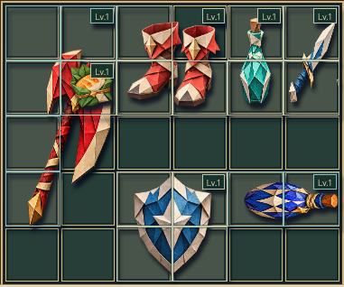
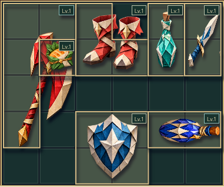
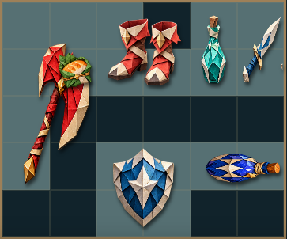
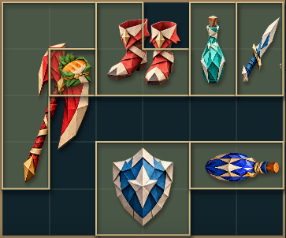
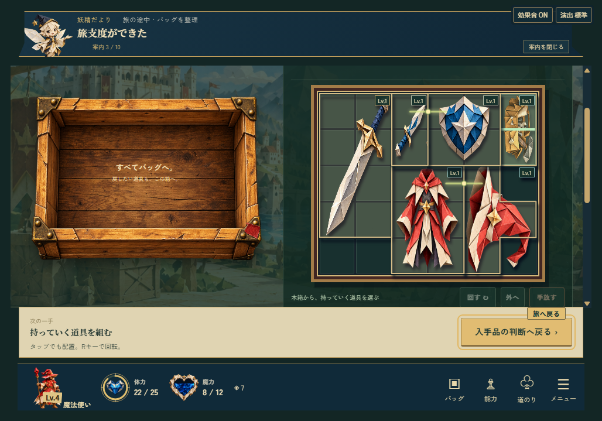
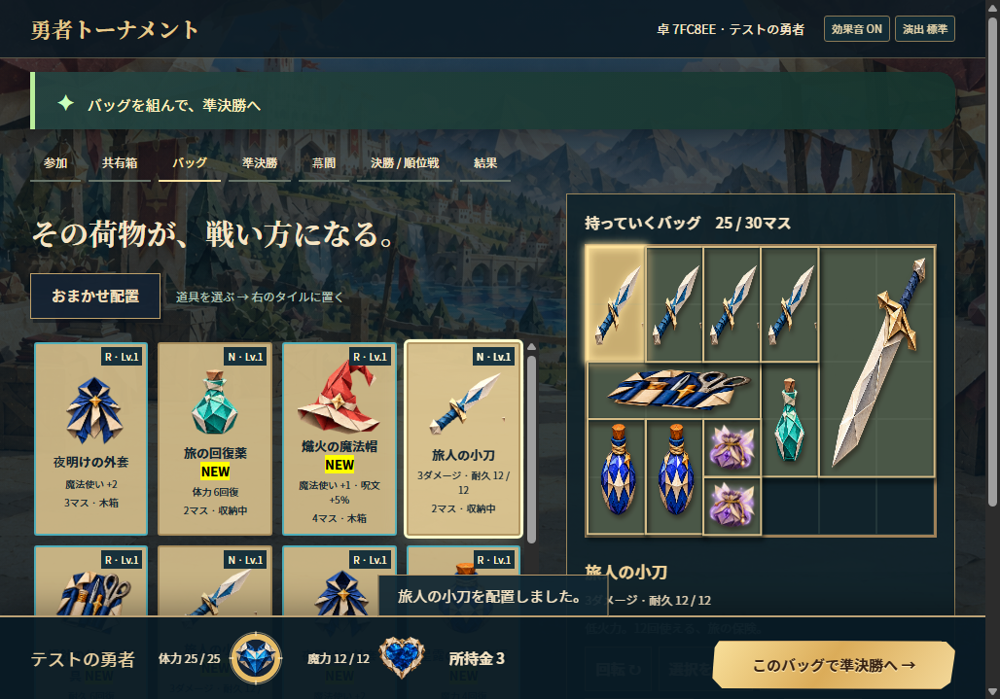

← 勇者トーナメントの案内2026年11月4日
r15 · カバン表示の修正比較
選んでいなくても、ひとつの道具の形がわかるように。
複数品を詰めたカバンで、道具が使うマスの外周を表示。絵と枠を合わせて、どこまでが一品なのかを見分けやすくする改善です。
以下はsynthetic fixture（検査用に組んだ同一状態）を使った、Linux Chromiumの前後比較です。元の画面は1028×719px。カバン部分だけを切り出しています。自然プレイや実Windowsの記録ではありません。
旅のカバン
道具の全体絵と向きを残し、占有マスの外周をひとつの輪郭として表示します。


切り出し画像：381×318px
準備画面のカバン
L字の空きと、そこに入った別の品を区別。選択していない状態でも一品ずつの形を示します。


切り出し画像：363×302px
実Windowsの、いつもの配置でも。
以下はWindows / WebView2・1028×719pxで、通常の支給と操作から記録した実画面です。検査用配置の前後比較とは別の記録です。チュートリアル・ひとりでお試し・部屋対戦・冒険を完走し、カバン37記録で外周と実際の形・位置・入力透過を照合しました。

